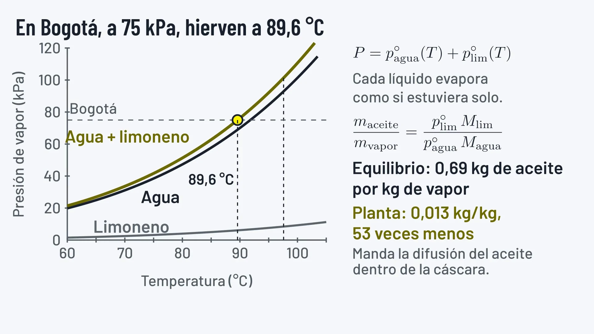

IQYA-2031 · Sesión 01
Bienvenidos al curso
Un semestre para diseñar, dimensionar y simular una planta real de aceite esencial a partir de la cáscara que deja una juguera colombiana
Esto es lo que su equipo va a construir
Ocho estaciones encadenadas que convierten un residuo en un producto de valor. Cada semana del curso agrega una de estas piezas al diseño.
De qué tamaño es este reto
Lo que veremos hoy
El reto del semestre
Hervir a 98 °C lo que hierve a 176 °C: de la cáscara que deja una juguera a aceite esencial rectificado.
Los 98 °C son a nivel del mar. En Bogotá, a unos 75 kPa, la mezcla de agua y limoneno hierve a unos 90 °C.
Lo que hoy se bota es la materia prima
Las jugueras colombianas procesan grandes volúmenes de lima, naranja y mandarina. La cáscara sale como residuo húmedo, con costo de disposición y carga ambiental.
Esa misma cáscara guarda entre 0,5 y 3 % de aceite esencial, que la industria de bebidas, perfumería y productos de aseo compra por su limoneno y sus notas aromáticas.
Por qué el limoneno sale con el vapor por debajo de 100 °C

Cuatro materias primas posibles
La elección se justifica con tres criterios y con datos de su región. Cualquiera de las cuatro sirve si su equipo la sustenta.
| Materia prima | Aceite que aporta | Disponibilidad | Para tener en cuenta |
|---|---|---|---|
| Lima Tahití | Destilado, de grado comercial, con unos 55 % de limoneno | Alta, por el descarte de exportación | El aceite de lima se vende destilado, como el que sale de esta planta |
| Naranja Valencia | 90-95 % de limoneno | La mayor de las cuatro | El caso mejor documentado en la literatura |
| Mandarina | Más oxigenados que la naranja | Depende de la región | Cambia el corte de la columna de rectificación |
| Toronja | Menor rendimiento | Menor que la de naranja | Mayor valor por su nota aromática |
Humedad de entrada, contenido de aceite y volumen disponible: los tres datos que debe sustentar en la primera bitácora. Los rangos de arriba son los de la cáscara en general. Limoneno del aceite destilado de lima: Pino y Rosado (2001), Journal of Essential Oil Research 13, 179-180.
Qué separa la columna al final de la planta
Hidrocarburos terpénicos: la mayor parte del aceite
 (R)-LimonenoC10H16
(R)-LimonenoC10H16 γ-TerpinenoC10H16
γ-TerpinenoC10H16 β-PinenoC10H16
β-PinenoC10H16Oxigenados: pocos, pero dan el aroma
 LinalolC10H18O
LinalolC10H18O Geranial (citral a)C10H16O
Geranial (citral a)C10H16O DecanalC10H20O
DecanalC10H20OOcho estaciones, ocho decisiones de diseño
Toque una estación para verla en detalle
Cada una es una decisión de diseño que su equipo tendrá que tomar y justificar en las bitácoras.
Una decisión viaja por toda la planta
Del desgarrado a la columna
El tamaño al que desgarre la cáscara cambia el tiempo de lote del arrastre, y con él el vapor que consume. Ese vapor fija la carga del condensador y el agua de enfriamiento que hay que bombear. Más abajo, la pureza que le pida a la columna decide cuánto vacío, cuánta altura de empaque y cuánto rehervidor paga la planta.
El equipo docente
Quiénes lo acompañan este semestre, cuándo nos vemos y cómo comunicarse.
Por confirmar: el equipo y el horario de 2027-10
Equipo docente
Por confirmar: el equipo de 2027-10. Se muestra el de 2026-20.
Profesor
Luis H. Reyes
lh.reyes@uniandes.edu.co
Atención: viernes de 8 a.m. a 12 m., con cita previa por correo.
Asistente
Andrés F. Infante
af.infante@uniandes.edu.co
Primer punto de contacto para talleres, entregas y dudas del día a día.
Monitora
Dana Catalina Mora
dc.morat1@uniandes.edu.co
Apoyo cercano al grupo para resolver lo cotidiano del curso.
Dos sesiones por semana, un solo canal
Por confirmar: el horario y el equipo de 2027-10. Se muestran los de 2026-20.
Martes
11:00 a.m. a 12:20 p.m.
Sesión magistral
Jueves
11:00 a.m. a 12:20 p.m.
Sesión magistral
El salón se publica en Bloque Neón
La asistencia a las magistrales es obligatoria y hay control diario. El quiz se hace al inicio de la sesión, sin excepción.
Escriba a los tres, con este asunto
[IQYA-2031] - Tema
lh.reyes@uniandes.edu.co · af.infante@uniandes.edu.co · dc.morat1@uniandes.edu.co
Tiempo de respuesta: 48 horas hábiles.
Objetivos y ABET
Qué logrará al finalizar el curso y cómo ese trabajo se conecta con la acreditación del programa.
Lo que usted logrará
Cada resultado ABET se evalúa con algo que usted entrega
El programa está acreditado por ABET, y la evidencia de cada resultado sale del trabajo del proyecto.
| Resultado de aprendizaje (student outcome) | Quices | Talleres | Bitácoras | Sustentación | Coevaluación |
|---|---|---|---|---|---|
| 1Identificar, formular y resolver problemas complejos | |||||
| 2Aplicar diseño de ingeniería para producir soluciones | |||||
| 3Comunicarse con eficacia ante audiencias distintas | |||||
| 5Funcionar de forma efectiva en un equipo | |||||
| 7Adquirir y aplicar conocimiento nuevo según se necesite |
- Se evalúa ahí: resultado técnico (1, 2 y 7)
- Se evalúa ahí: resultado profesional (3 y 5)
- No se evalúa con esa actividad
Los cuatro objetivos del programa (PEO) que enmarcan el curso: diseño creativo para problemas reales, análisis multiescala de procesos sostenibles, comunicación y colaboración, y ejercicio ético de la profesión.
Cómo aprendemos
Project Oriented, Problem Based Learning con aula invertida. El proyecto le da contexto a cada tema.
Antes, durante y después de cada clase
Antes · 3 h
Preparación individual
- Lectura del tema, preparada para el curso
- Material audiovisual complementario
- Llegar con una comprensión básica ya construida
Durante · 3 h
Sesión presencial
- Quiz individual sobre el material previo
- Charla con profundización y ejemplos industriales
- Taller en parejas con problemas reales
Después · 3 h
Trabajo autónomo
- Aplicación al diseño de la planta de aceite esencial
- Búsqueda de información técnica
- Avance de las bitácoras de cálculo
Aprendizaje just-in-time: el tema llega la semana en que su equipo lo necesita para el proyecto. No hay teoría sin destino.
Lectura, quiz, taller, proyecto
Lea antes de clase
La lectura del tema, publicada en la página del curso. Los quices salen de ahí.
Quiz al iniciar
Individual, sin supletorio. Mide que llegó preparado a la sesión.
Charla y taller
Se profundiza el tema y se resuelve un problema real en parejas.
Aplique al proyecto
El tema se convierte en una estación más de su planta.
Por qué funciona
El proyecto le da contexto al contenido, la retroalimentación es continua y usted desarrolla autonomía para gestionar su tiempo. Es el ambiente profesional: aprender y entregar a la vez.
El semestre en el tiempo
Siete módulos que recorren la planta de izquierda a derecha, en 16 semanas de clase y la semana 17 para los pósters finales.
Siete módulos, en el orden de la planta
El semestre completo
16 semanas de clase y la semana 17 para los pósters finales.
Por confirmar: las fechas, con el calendario 2027-10. Los hitos ya están fijos por semana.
Evaluación y uso de IA
Cómo se construye la nota, cómo funciona la coevaluación y qué nivel de inteligencia artificial se permite en cada actividad.
Distribución de la nota
Cuatro bitácoras marcan el ritmo
Semana 3
Materia prima elegida y justificada, PBD, balance global y manejo de sólidos: lavado y desgarrado.
Semana 7
PFD completo, transporte de fluidos, bombas y agitación del tanque de lavado y del tanque de winterización.
Semana 10
Arrastre de vapor, condensador y winterización, con el tiempo de lote ajustado a datos.
Semana 15
Rectificación al vacío e integración de toda la planta, con el PFD final.
Qué contiene cada bitácora
Memoria de cálculo, supuestos declarados, fuentes citadas y resultados. Siguen el formato de la guía, publicada en Material del curso. Cada entrega incluye la declaración de uso de IA.
Cómo funciona la coevaluación
Dos reglas que no se negocian
La coevaluación es autónoma y no se modifica bajo ninguna circunstancia. Por cada coevaluación no realizada se descuenta 1,0 punto de esa evaluación. Los criterios los define su equipo al inicio del semestre.
La IA se usa con criterio, no en lugar del criterio
Nivel 1
Sin IA
No se permite el uso de herramientas de IA.
Quices semanales
Nivel 2
IA para ideas
Apoyo para generar ideas y estructurar el trabajo.
Talleres en clase
Nivel 3
IA para edición
Apoyo para refinar la redacción y mejorar la claridad.
Bitácoras y proyecto
Nivel 4
IA con evaluación
Tareas resueltas con IA y evaluación crítica posterior.
No aplica en el curso
Nivel 5
Uso completo
Uso integral de la IA a discreción del estudiante.
No aplica en el curso
Declaración obligatoria en cada entrega
Qué herramientas usó, con qué propósito y cómo evaluó críticamente los resultados. El objetivo es que usted desarrolle juicio sobre lo que la herramienta produce.
Expectativas y apoyo
Lo que se espera de usted, lo que puede esperar del curso y con qué red cuenta si algo se complica.
Por confirmar: la semana de retiro, con el calendario 2027-10
Reglas de juego
Presencia y puntualidad
Magistrales obligatorias con control diario. El quiz se hace al inicio, sin excepción. No hay supletorio: con excusa válida, el siguiente quiz vale el doble.
Por Bloque Neón y a tiempo
Los quices no admiten entrega tardía. Talleres y documento final pierden una unidad por cada 15 minutos de demora.
Original y citado
Todo trabajo es original del equipo. Cite en IEEE o APA y declare el uso de IA. El plagio resulta en nota de 0 y reporte al comité disciplinario.
Lo que puede esperar del curso
Temas que llegan cuando los necesita, retroalimentación continua, criterios de evaluación claros y un equipo docente cercano. Todo el material vive en la página del curso.
Trabajo en equipo, diversidad y apoyo
Grupos fijos de 4 a 5
Los grupos los arma el profesor y se mantienen todo el semestre. Los problemas internos se reportan primero al asistente y luego al profesor.
Avísenos temprano
Si requiere ajustes razonables, informe en las primeras dos semanas: se implementan de forma confidencial. Puede solicitar ser identificado con el nombre y los pronombres de su elección.
Un ambiente seguro
Valoramos la diversidad y cuidamos un ambiente de aprendizaje respetuoso e inclusivo para todas las personas.
Rutas de apoyo, protocolo MAAD: lineamaad@uniandes.edu.co · ombudsperson@uniandes.edu.co · Decanatura de Estudiantes: centrodeapoyo@uniandes.edu.co · Red PACA: paca@uniandes.edu.co · CEU: comiteacosoceu@uniandes.edu.co
Qué debe hacer esta semana
IQYA-2031 · Empecemos
Manos a la planta
Nos vemos en la próxima sesión, donde se anuncian los equipos. Llegue con la Lectura 01 hecha.